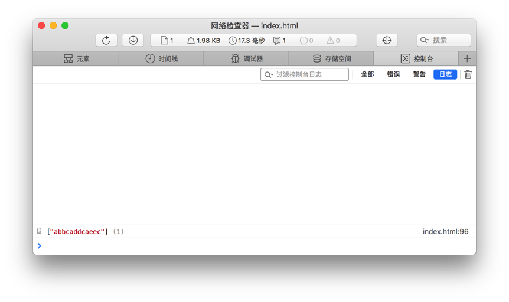
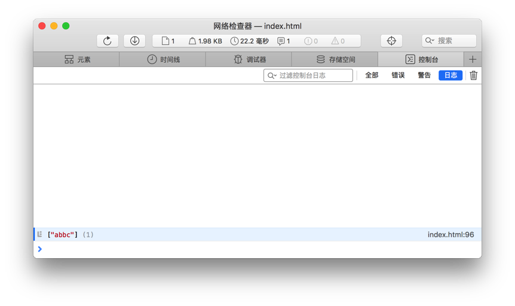

学习笔记
RegExp 之贪婪模式、JavaScript 距离、图片预加载
一、RegExp 之贪婪模式
＃ 什么是贪婪匹配？
The three common quantifiers (*, + and ?) are greedy by default because they match as many characters as possible.
也就是说贪婪模式会匹配尽可能多的字符。
＃ 例子
1.// 正则默认是贪婪模式的
2.var str = 'abbcaddcaeec';
3.var re = /a.+c/;
4.console.log(str.match(re));
审查元素：

在检查器中，我们可以看出，你可能想匹配的是abbc addc 或者 aeec ,但最终的结果匹配到了 abbcaddcaeec.因为 they match as many characters as possible.
1.// 非贪婪模式
2.var str = 'abbcaddcaeec';
3.var re = /a.+？c/;
4.console.log(str.match(re));
审查元素：

在量词后面直接加上一个问号 ? , 就是非贪婪模式。如上，就只匹配到了 abbc.
二、距离
主要记录一下原生 JavaScript 获取距离的方法，其它库或框架可查询相关官网。
＃ event 事件当中的距离
1.function show(ev){
2. var ev = ev || event,
3. x = ev.clientX,
4. y = ev.clientY;
5. console.log('clientX: '+x+';clientY: '+y);
6.}
ev.clientX,事件属性返回当事件被触发时鼠标指针向对于浏览器页面（或客户区）的水平坐标。它相对的是整个视图窗口。ev.clientY同理。
兼容性：所有浏览器均支持。
1.function show2(ev){
2. var ev = ev || event,
3. Px = ev.pageX,
4. Py = ev.pageY;
5.
6. console.log('pageX: '+Px+';pageY: '+Py);
7.}
ev.pageX,事件属性是鼠标指针的位置，相对于文档的左边缘。它相对的是整个文档。ev.pageY同理。兼容性：除IE6/7/8其他浏览器均支持。
＃ element.offsetXXX
element.offsetParent,离当前元素最近的一个有定位属性的父节点。element.offsetLeft,当前元素到定位父级的左距离（左偏移值），也就是到当前元素的offsetParent的左距离。element.offsetTop同理。兼容性：除FireFox，所有浏览器均支持
有时，我们想要知道某个元素到整个文档最左、最顶部的距离，我们可以利用这三个属性封装一个方法。
1.function getPos(obj){
2. var pos = {
3. left: 0,
4. right: 0
5. };
6. while(obj){
7. pos.left += obj.offsetLeft;
8. pos.top += obj.offsetTop;
9. obj = obj.offsetParent;
10. }
11.
12. return pos;
13.}
＃ 其他
- 窗口文档元素的宽高
1.var viewW = document.documentElement.clientWidth,
2. viewH = document.documentElement.clientHeight;
- 整个文档元素的宽高
1.var docW = document.documentElement.offsetWidth || document.body.offsetWidth,
2. docH = document.documentElement.offsetHeight || document.body.offsetHeight;
- 滚动条的滚动距离
1.var scrollTop = document.documentElement.scrollTop || document.body.scrollTop;
三、图片预加载
图片预加载是提高用户体验的一种很好的方式，在使用该图片之前就加载完毕，使 用时就不需要再次加载该图片。
＃ 使用 JavaScript 实现图片预加载
1.window.onload = function(){
2. var src1 = '图片地址',
3. src2 = '图片地址',
4. src3 = '图片地址';
5.
6. preloader(src1,src2,src3);
7.}
8.
9.function preloader(url1,url2,url3) {
10. var images = [];
11. for(var i=0,len=arguments.length;i<len;i++){
12. images[i] = new Image();
13. images[i].src = arguments[i];
14. }
15.}
使用上述代码有些缺陷，当使用 Webpack 给图片添加 md5 的时候，由于图片地址发生了改变，此方法便会生效。
＃ 使用 HTML CSS 实现图片预加载
1.<span class="preload pimg1"></span>
2.<span class="preload pimg2"></span>
3.<span class="preload pimg3"></span>
1. .preload{
2. width: 1px;
3. height: 1px;
4. visibility: hidden;
5.}
6..pimg1{
7. background: url(./images/a.png) no-repeat;
8.}
9..pimg2{
10. background: url(./images/b.png) no-repeat;
11.}
12..pimg3{
13. background: url(./images/c.png) no-repeat;
14.}
该方法也有缺陷，增加了页面的整体加载时间。也可以使用 Ajax 等方法实现图片预加载，各个方法各有优缺，可以根据具体情况来选择使用哪一种方法。